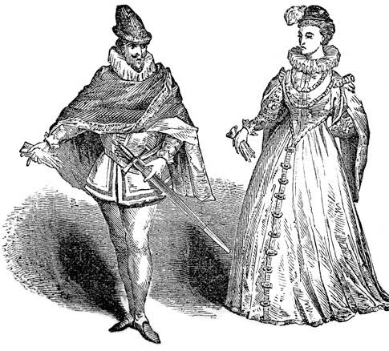
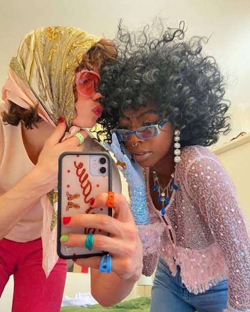

Vou compartilhar conhecimentos sobre moda.
Por: Liza
Boas vindas ao meu novo blog! Aqui vou compartilhar a história da moda, como surgiu e suas curiosidades.
Meu assunto principal será focado na Vivienne Westwood e em sua estética punk, que foi uma das primeiras estilistas punk lá pelos ano 70, causando intriga, curiosidade e interesse nas pessoas.
Nascida em 8 de abril de 1941, nasceu Vivienne Isabel Swire, na Inglaterra. O pai da mesma era sapateiro, e sua mãe trabalhava em uma fábrica de algodão, dando para sua filha uma simples infância.Desde pequena tinha certos interesses, demonstrou forte interesse por leitura, literatura e trabalhos manuais, com isso, sua mãe percebeu e lhe ensinou a costurar, remendar, reciclar roupas, influenciando seu estilo de vida e criação no futuro.
Vivienne entrou no mundo punk ao se unir com Malcom Mclaren nos anos 1970, abrindo uma loja em Londres chamada "Let it Rock", e, conforme a estética do lugar evoluía, o nome também. A loja aderiu o motociclismo e o couro, passand por dois nomes diferentes:"Too Fast to Live" e "Too Young to Die" até chegar no famoso "SEX", referência a banda Sex Pistols. Na loja eles vendiam figurinos icônicos pra a banda, definindo a estética, movimento e o som punk. Em suas roupas haviam alfinetes, correntes, rasgos, elementos sexuais e estampas provocantes (como camisetas anarquistas) para expressar revolta contra o sistema.
As principais modelos da marca foram: Kate Moss, Naomi Campbell, Linda Evangelista, Christy Turlinton e Helena Christensen, mas também contou com sua própria colaboração para expandir e "popularizar" sua marca com o amigo, aparecendo em vários desfiles com seus looks icônicos. Conseguindo o que quis, hoje em dia ela é uma grande inspiração para grandes estilistas como John Galliano, Marc Jacobs e Alexander McQueen.
Hoje em dia, a marca é de grife e fez colaboração com o Ai Yazawa e se popularizou por conta do anime "NANA", principalmente com a estética do planeta saturno e acessórios de metais pesados. Em sua vida pessoal, teve dois filhos cujo herdaram a marca da mãe e hoje é uma grande marca de grife britânica admirada por muitos estilistas do mundo inteiro.

Em nossa sociedade, há muitas subculturas, porém muitas pessoas se aproveitam de sua estética para se autonomear algo que elas definitivamente não são, mas esse não é o meu foco hoje! Vou falar sobre a estética que muitas subculturas adquiriram como forma de revolta (na maioria das vezes) contra o governo e os padrões bizarros que a prórpria sociedade impôs.
Na subcultura gótica por exemplo, como muitos sabem, o preto é muito usado como forma de expressar a melancolia e o luto, mas também, drama, sobriedade, teatralidade e sofitiscação, junto com o mistério da noite. Usam roupas extravagantes para, como eu havia dito, mostrar sua revolta e ódio contra o sistema, que na época era mais mutio mais rígido do que é hoje em dia.
Agora vou falar sobre a contracultura e subcultura punk, que surgiu por meados da década de 70 após a revolução industrial como resposta a crise econômica e o desemprego, a estética da sub rejeitou os padrões tradicionais de beleza usando roupas rasgadas, jaquetas de couro, cabelos extremamente chamativos e coloridos, adotando o método DIY (dot it yourself = faça você mesmo), sendo assim, a grande maioria desse povo (se não todos) "fabricavam" suas prórpias roupas, pegavam de seus pais e customizavam, etc.
Todas as subculturas surgiram como meio de revolta a algo, na maioria das vezes contra o sistema, mas também como necessidade de se expressar diante da insatisfação com a cultura e os padrões dominantes e necessidade de identidade própria.
A moda não é só roupa, é um meio de expressão.

Nessa época, a moda era algo renomado e marcou a história da moda, transicionando de trajes medievais soltos para silhuetas altamente estruturadas, luxuosas e geométricas. Ela funcionava como forma de status social e símbolo de poder. Tecidos caros como seda e veludo eram usados com ouro e com cores caras que diferenciavam a nobreza do povo.
A vestimenta feminina foi marcada por corsets, saias grande e volumosas, mangas bufantes, volumes artificiais no ombro, peito e quadril. Os grandes vestidos eram compostos por aros de metal, madeira ou crina colocada sob a saia para dar mais volume. A grande maioria dos vestidos da época eram marcados também por decotes quadrados generosos, porém a moda evoluiu para a gola rufo (um babado rígido plissado no pescoço). Já a moda masculina foi marcada pelo gibão (jaqueta curta e acolchoada, abotoada na frente, que modelava o tronco), braguilhas e calções curtos com meias calças justas, o que significava riqueza e nobreza.

A moda atua como um espelho e, ao mesmo tempo, moldador de comportamentos, criando e reforçando esteriótipos que a sociedade "utiliza". O primeiro ponto é o corpo idealizado, ou seja, magreza extrema e alta estatura como sinônimos de beleza e sucesso. Também cria preconceito com pessoas idosas, pois a moda foca marjoritariamente na juventude, associando o envelhecimento a perda de estética e relevância no estilo. Há também o eurocentrismo, no caso, os padrões de beleza ocidentais (pele clara e cabelos lisos por exemplo), foram logamente priorizados, marginalizando estéticas afro, que tem como destaque o cabelo cheio e volumosos e peles escuras, o que particularmente eu acho muito mais bonito do que o padrão de beleza ocidental.
Muitas pessoas usam marcas de grife, ou mesmo roupas/peças falsas com marcas estampadas como: Louis Vuitton, Gucci, Prada, criando o esteriótipo de que o "bom gosto" está atrelado ao poder da compra e da riqueza. A sociedade tende a rotular o caráter, competência e classe social da pessoa pelo modo que ela se veste, qualidades de suas roupas e pelas marcas usadas.
